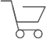
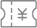

<!--
  Generated template for the TempPage page.

  See http://ionicframework.com/docs/components/#navigation for more info on
  Ionic pages and navigation.
-->
<!-- <ion-header>

        <ion-navbar>
          <ion-title>我的</ion-title>
        </ion-navbar>
      
      </ion-header> -->
      
      
      <ion-content>
        <div class="touxiang">
          <br/>
          <h5>土方桔桔桔</h5>
        </div>
        <div class="dingdan">
          <p class="my">我的订单</p>
          <p class="right">查看全部订单&nbsp;></p>
        </div>
        <div class="list">
          <div class="first">
            <br/><br/>
            <span>我的发布</span>
          </div>
          <div class="second">
              <br/><br/>
              <span>我的收藏</span>
          </div>

          <div class="third">
              <br/><br/>
              <span>我的发布</span>
          </div>
        </div>
        <ion-grid>
          <ion-row>
            <ion-col col-6></ion-col>
            <ion-col col-6></ion-col>
          </ion-row>
          <ion-row>
            <ion-col col-6></ion-col>
            <ion-col col-6></ion-col>
          </ion-row>
          <ion-row>
            <ion-col col-6></ion-col>
            <ion-col col-6></ion-col>
          </ion-row>
        </ion-grid>
      </ion-content>
      